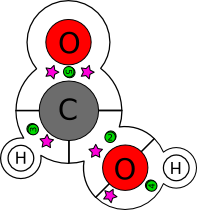
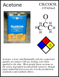
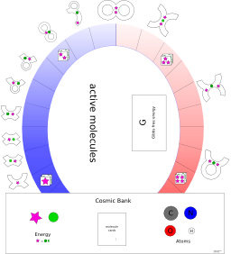

I became interested in Chemistry while reading
Molecular Biology of the Cell, and
after much self-study, I realized that the general
mechanics of [organic] chemistry aren't that difficult. While the
names are long and technical, and proficiency requires memorization of
many specific reactions, most of our core understanding of
chemistry can be boiled down into a few fairly simple concepts: the
twin conservations of matter and energy; the relationships between energy,
temperature, and entropy; and the formation and destruction of
chemical bonds.
These concepts are simple, but not straightforward. I handily passed
the Chemistry AP test in high-school, but I still had to double-check
when I re-read that "breaking bonds takes energy, creating bonds makes
energy". I was not yet of drinking age when I first learned the formal
definitions of alcohol, acid, and oxidation; it's much more interesting
now to know that
ethanol,
in the presence of
oxygen,
degenerates to
acetic acid.
A bottle of wine left uncorked will be vinegar the next day!
I find these insights fascinating and grounding, not tedious and theoretical as they are so often presented. So for the past two years, I've worked at communicating part of my grounded fascination to those who might be struggling with the subject. What I came up with is Orgo, an organic chemistry board game.
|  | I spent a few hundred hours working on an interesting set of pieces (PS) to model, on a flat surface, the atoms and average bonds between them. A good starting game can be made using only molecules with Carbon, Oxygen, and Hydrogen in them; later expansions would continue with Nitrogen and then Sulfur and maybe benzene rings or ionic bonds. Each bond has its average enthalpy value printed on it, converted to manageable game energy units. A "star" in this version is the average ionization energy of one electron pair, so you can tell at a glance how many electron pairs are in the bond. |
| formic acid (using Orgo pieces) |
| I enumerated the set of molecule cards, for those simple molecules that can be represented with this set of pieces. Each molecule card notes the additional released bond energy in that form in game energy units, as well as its toxicity/flammability/reactivity in the standard fire diamond. These cards represent both the initial reactants and the ultimate arsenal of poison, fire, and corrosion that each player unleashes on their opponent. Flavortext relates the molecule to everyday experience. |  |
|  | I drew up a proper board, though I must apologize for my meager design skills. I wrote some rules that are playable but quite clunky. This game is not finished yet. The rules need to be tested through with all manner of players and scenarios, and the specific numeric values on the cards and bonds need balancing, to be polite. |